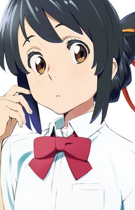
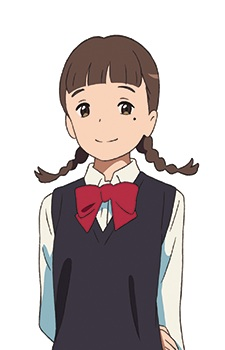
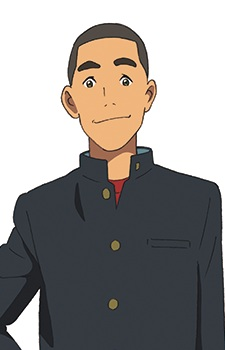
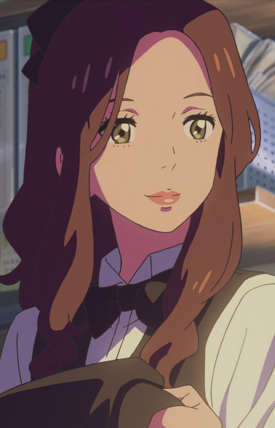
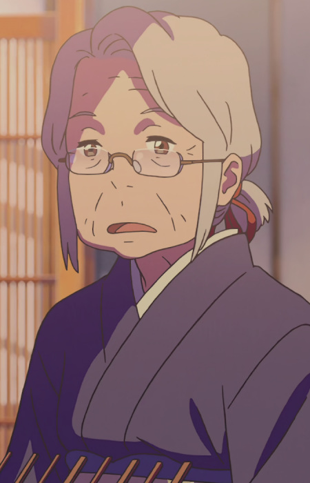

角色介绍
CHARACTERS
立花 瀧
Taki Tachibana
男主角生活在东京的高中生，性格直率、有点急躁。擅长绘画和建筑设计，梦想成为一名建筑师。与三叶交换身体后，逐渐爱上了这个素未谋面的女孩。当发现三叶已在彗星灾难中遇难后，不顾一切地穿越时空去拯救她。

宮水 三葉
Mitsuha Miyamizu
女主角生活在岐阜县深山小镇糸守町的女高中生，宫水神社的巫女。性格认真但有些冒失，对小镇的狭小和传统束缚感到郁闷，渴望去东京生活。与瀧交换身体后，替他约到了打工餐厅的前辈奥寺。

名取 早耶香
Sayaka Natori
三叶的闺蜜三叶的同班同学和好友，性格温和善良，是学校广播社的成员。在彗星坠落当天，她利用广播系统的知识帮助三叶发出了避难通知，在拯救小镇的行动中起了关键作用。

勅使河原 克彦
Katsuhiko Teshigawara
三叶的好友三叶的同班同学，当地建筑公司社长的儿子。精通机械和爆破，性格豪爽可靠。在拯救小镇的计划中，他冒险使用炸药炸毁了变电站，制造混乱来帮助三叶实施避难计划。

奥寺 ミキ
Miki Okudera
瀧的前辈瀧打工餐厅的大学前辈，美丽知性。瀧一直暗恋着她，在身体交换期间"三叶（瀧）"帮瀧约到了她。虽然最终瀧发现自己真正喜欢的是三叶，但奥寺前辈始终温柔地支持着他寻找真相。

宮水 一葉
Hitoha Miyamizu
三叶的祖母宫水神社的当家人，三叶的祖母。深谙神社古老的传统与「结び」（musubi/产灵）的含义。她是最早察觉三叶身体变化的人，也是理解「交换」这一现象背后深意的关键人物。